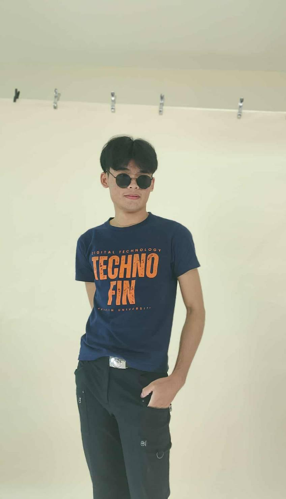
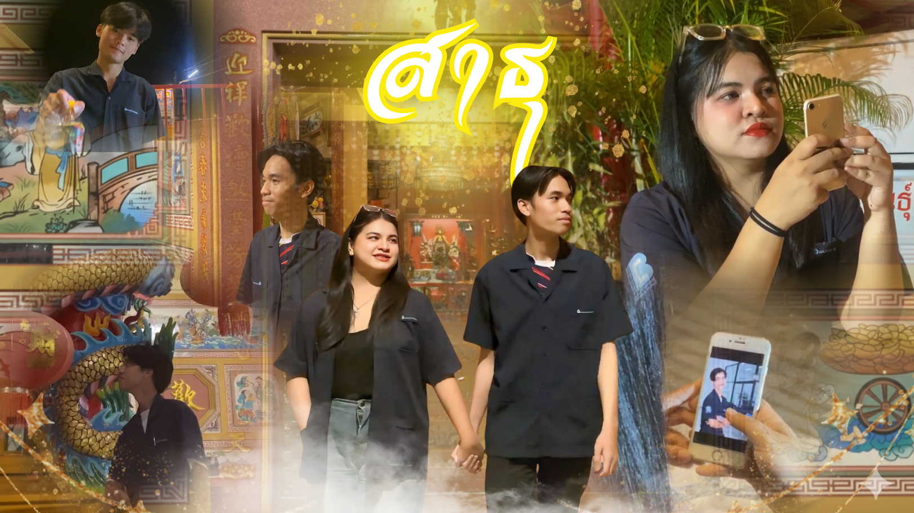
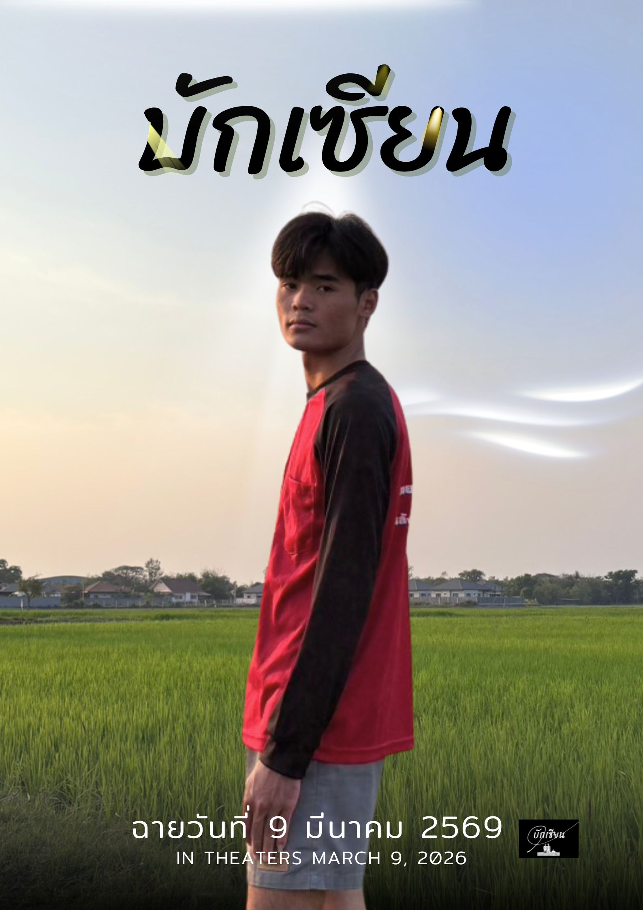

Consult

สวัสดีครับผม นายสุวิจักขณ์ โสภานะ นักศึกษาคอมพิวเตอร์ธุรกิจ มีความมุ่งมั่นที่จะก้าวสู่สายงาน AI Content Creator
โดยตั้งเป้าหมายที่จะนำองค์ความรู้ด้านโครงสร้างธุรกิจ มาผสานเข้ากับเทคโนโลยีสมัยใหม่และเครื่องมือ AI เพื่อคิดค้น วิเคราะห์
และสร้างสรรค์คอนเทนต์ที่ตอบโจทย์การใช้งานจริงและช่วยขับเคลื่อนการตลาดดิจิทัล พร้อมช่วยเพิ่มประสิทธิภาพให้แก่องค์กรอย่างยั่งยืน
ด้วยทักษะความอดทน ความรับผิดชอบ และการทำงานร่วมกับผู้อื่นได้อย่างดีเยี่ยม
โดยผมถือคติที่ว่า "การล้มเหลวไม่ใช่สิ่งที่ผิด แต่คือสิ่งที่จะช่วยให้เราพัฒนา"
โรงเรียนหนองชุมแสงวิทยาคม (สายวิทย์-คณิต)
เกรดเฉลี่ย (GPA): 3.31

ออกแบบภาพโปรโมทและหน้าปกคลิป MV HOOK ของเพลง สาธุ (Sathu) - ASIA7 Feat. ปลาย กนกพร (ไม่ได้นำมาหาผลกำไรทุกรูปแบบ) เป็นผลงานการถ่ายทำและตัดต่อในรายวิชาเรียนที่สร้างสรรค์ออกมาได้อย่างโดดเด่นจนอาจารย์ผู้สอนประทับใจ และได้รับคัดเลือกให้นำไปเผยแพร่โปรโมทบนแฟนเพจอย่างเป็นทางการของสาขาวิชา

ผลงานการแสดงและการสร้างหนังสั้นที่มีการประยุกต์ใช้เทคโนโลยี AI ในการระดมไอเดียและเขียนบท พร้อมทั้งรับหน้าที่เป็นนักแสดงตัวหลักในกระบวนการถ่ายทำภาพยนตร์จริง เพื่อแสดงศักยภาพในด้านการคิดเนื้อหาเชิงสร้างสรรค์ร่วมกับปัญญาประดิษฐ์ (AI Tools) ในฐานะ AI Content Creator